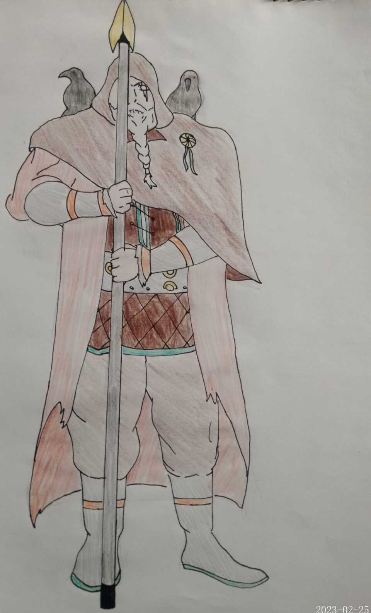
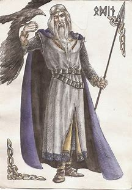
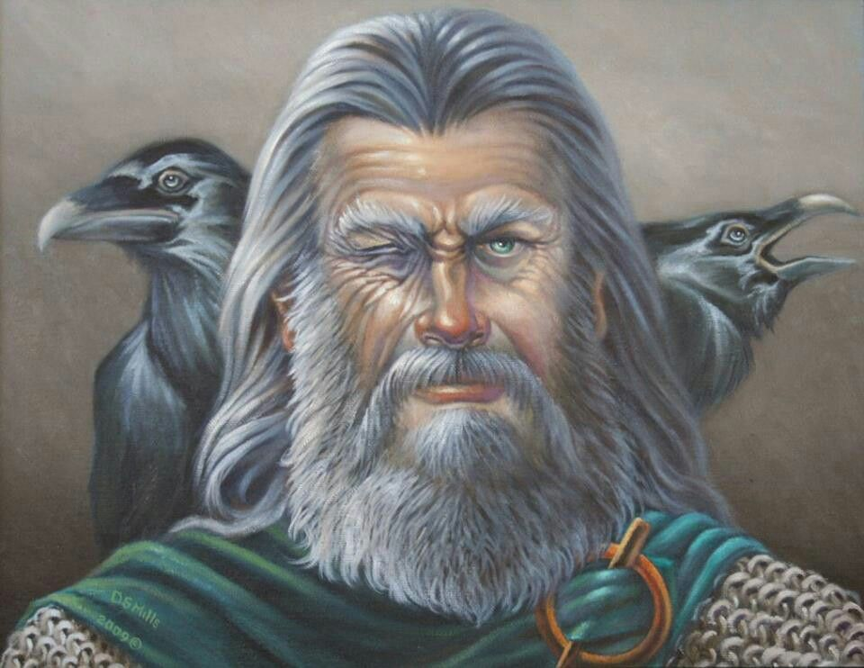

Vestimentas
No mitologia nórdica, Odin é frequentemente retratado vestindo uma armadura de batalha, geralmente feita de metal e decorada com desenhos complexos e simbólicos. Ele também é frequentemente representado usando um manto longo e capuz, geralmente adornado com peles ou penas, que é chamado de "vafþrúðnir".
Além disso, Odin é conhecido por usar um chapéu de abas largas, muitas vezes decorado com chifres de animais, que é chamado de "hjalmþrima". Ele também é frequentemente retratado carregando uma lança mágica chamada "Gungnir", que é descrita como sendo invencível e sempre acertando o alvo, bem como um anel chamado "Draupnir" e um chicote ou vara mágica chamado "Geri e Freki".

Traçõs Físicos
Odin é frequentemente retratado como um homem idoso, barbudo e de aparência sábia. Ele é geralmente descrito como alto, magro e de constituição forte, com olhos penetrantes e cabelos e barba longos e grisalhos. Sua aparência muitas vezes transmite uma sensação de poder e sabedoria.
Na mitologia nórdica, Odin é frequentemente retratado com um único olho, já que ele supostamente sacrificou um olho para ganhar sabedoria. O outro olho é geralmente descrito como tendo uma aparência brilhante e penetrante, como se pudesse ver através de tudo.
Vale ressaltar que a representação física de Odin pode variar de acordo com diferentes fontes e culturas. Algumas tradições podem enfatizar diferentes aspectos de sua aparência ou apresentá-lo de maneira mais simbólica do que literal.
Ambições
Na mitologia nórdica, Odin é frequentemente retratado como um deus poderoso e sábio, cujas ambições são motivadas pelo desejo de proteger e preservar o mundo conhecido. Algumas das ambições atribuídas a Odin incluem:
Liderança e Sabedoria: Odin é o líder dos deuses nórdicos e, como tal, é responsável por governar e proteger o mundo. Ele é considerado um estrategista brilhante e está sempre buscando maneiras de defender os deuses e a humanidade dos perigos que os ameaçam.
Guerra e Glória: Odin também é um deus da guerra e é frequentemente retratado como um guerreiro formidável e destemido. Ele valoriza a coragem e a bravura em batalha e é conhecido por recompensar aqueles que morrem em combate com uma vaga no Valhalla, o salão dos heróis.
Conhecimento dos Mistérios: Odin é também o deus dos mistérios e segredos ocultos. Ele está constantemente buscando entender os mistérios do universo e da vida, e é considerado um mestre em magia e feitiçaria.
Jornada
A jornada de Odin é um tema importante na mitologia nórdica, e é frequentemente descrita como uma busca por conhecimento, sabedoria e poder. Segundo a lenda, Odin deixou sua casa em Asgard para viajar pelos nove mundos da mitologia nórdica em busca de experiências e conhecimento.
Durante sua jornada, Odin enfrentou muitos desafios e perigos, incluindo monstros, gigantes e outros seres sobrenaturais. Ele também realizou sacrifícios para ganhar conhecimento, incluindo o sacrifício de um olho para ganhar sabedoria. Em outra ocasião, ele enforcou-se na árvore Yggdrasil durante nove dias e nove noites para obter conhecimento das runas.
Além disso, Odin também é frequentemente retratado como um deus guerreiro que liderou batalhas contra seus inimigos. Ele é muitas vezes descrito como um líder sábio e astuto que usa sua inteligência e habilidades mágicas para ajudar seus aliados e derrotar seus inimigos.
Ao longo de sua jornada, Odin adquiriu muitos objetos poderosos, incluindo a lança mágica Gungnir, o anel Draupnir e o manto Vafþrúðnir. Ele também estabeleceu um grande salão em Asgard chamado Valhalla, onde os guerreiros mortos em batalha são recebidos após sua morte.
A jornada de Odin é considerada uma representação do desejo humano de adquirir conhecimento e poder, bem como uma expressão da importância da sabedoria e da coragem na mitologia nórdica.
Universo
Odin é um personagem da mitologia nórdica, que é composta por um conjunto de crenças, histórias e lendas compartilhadas por várias culturas escandinavas durante a Idade Média. Segundo a mitologia, o universo em que Odin vive é formado por nove mundos interconectados, que são sustentados por uma árvore chamada Yggdrasil.
Os quatro mundos da mitologia nórdica incluem:
Asgard
O reino dos deuses nórdicos, que é governado por Odin e sua família.
Vanaheim
O reino dos deuses Vanir, uma outra família divina na mitologia nórdica.
Asgard
O reino dos deuses nórdicos, que é governado por Odin e sua família.
Midgard
O reino dos humanos, que é governado pelos deuses nórdicos.